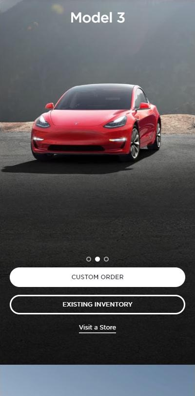
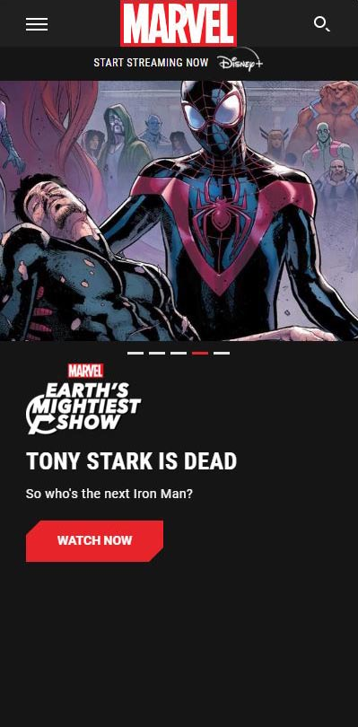

Rule of Thirds
Tesla
https://www.tesla.com/

Tesla uses thirds beautifully. Initially, the page opens with three vehicles and narrows in to one visible option. The vehicle fills the top two-thirds of the page leaving the navigation for the bottom thirds. There are three side-scroll circles. There are three clickable options in the lower third of the page. The number 3 is incorporates the vehicle name. Also, there is excellent use of white space drawing the eye the the central focal point, the elegant Model 3.
Repetition
Bank of America
https://www.bankofamerica.com/
The colors in the logo are repeated trhroughout this page. Red, blue, white and black are immitated in the credit cards. The cards form a layered line as they repeat, drawing the eye down but also leading it towards the text to the right. The text describing each card is left-aligned along the right side each card. This forms a second column, mirroring the first one. The colors of blue and red and black are used in the font colors, and the background maintains the white color. The options on the the lower part of the page keep very clean colums repeating the pattern above. All the text is sans-serif. The login and the logo both use uppercase. The menu bars near the login imitate the logo image creating balance across the top.
Contrast
Marvel
https://www.marvel.com/

Marvel uses the black background to give a stark contrast when color is used. The bright red in Marvel and in the "watch now" tab boldly stand out against the background, screaming, "Look at me!." The white text is very prominent. The color palette remains minimal to keep the contrast effective and the shades create a mature tone. The text styles play off each other. The solid, bold uppercase text of MARVEL draws the viewwers eyes to the similar styled headline proclaiming, "TONY STARK IS DEAD." Underneath, however, is the only text that isn't all uppercase. This separates it from the rest, showing it belons to an exclusive category. This text draws the reader to the storyline, drawing you in.